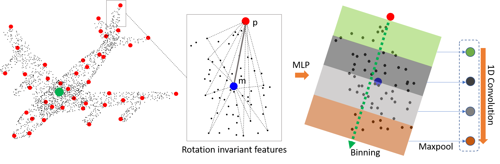

1Singapore University of Technology and Design
2The University of Tokyo
3Hong Kong University of Science and Technology
International Conference on 3D Vision (3DV) 2019

Recent progresses in 3D deep learning has shown that it is possible to design special convolution operators to consume point cloud data. However, a typical drawback is that rotation invariance is often not guaranteed, resulting in networks being trained with data augmented with rotations.
In this paper, we introduce a novel convolution operator for point clouds that achieves rotation invariance. Our core idea is to use low-level rotation invariant geometric features such as distances and angles to design a convolution operator for point cloud learning. The well-known point ordering problem is also addressed by a binning approach seamlessly built into the convolution. This convolution operator then serves as the basic building block of a neural network that is robust to point clouds under 6DoF transformations such as translation and rotation.
Our experiment shows that our method performs with high accuracy in common scene understanding tasks such as object classification and segmentation. Compared to previous works, most importantly, our method is able to generalize and achieve consistent results across different scenarios in which training and testing can contain arbitrary rotations.
@inproceedings{zhang-riconv-3dv19,
title = {Rotation Invariant Convolutions for 3D Point Clouds Deep Learning},
author = {Zhiyuan Zhang and Binh-Son Hua and David W. Rosen and Sai-Kit Yeung},
booktitle = {International Conference on 3D Vision (3DV)},
year = {2019}
}
Acknowledgements
The authors acknowledge support from the SUTD Digital Manufacturing and Design Centre (DManD) funded by the Singapore National Research Foundation. This project is also partially supported by Singapore MOE Academic Research Fund MOE2016-T2-2-154 and Singapore NRF under its Virtual Singapore Award No. NRF2015VSGAA3DCM001-014.